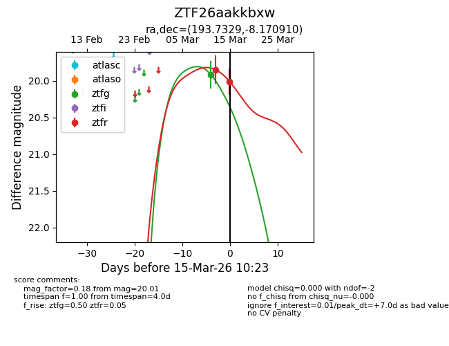
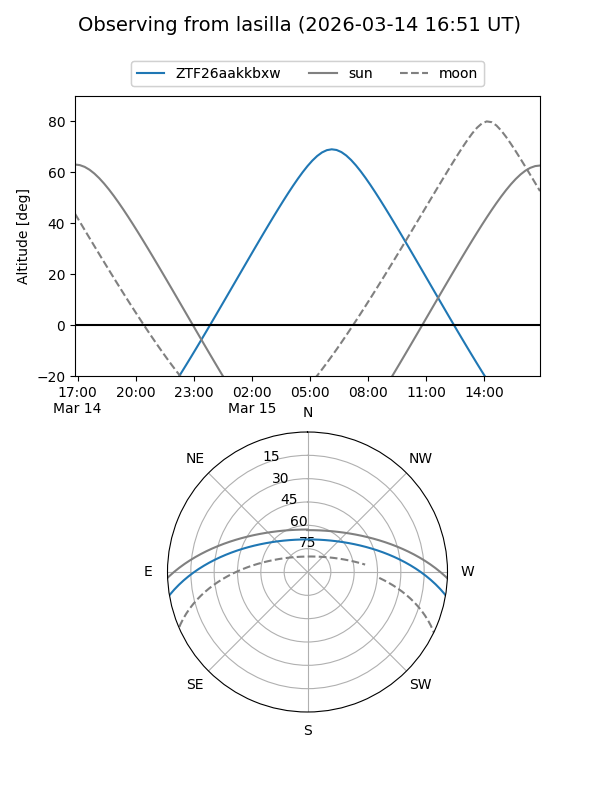
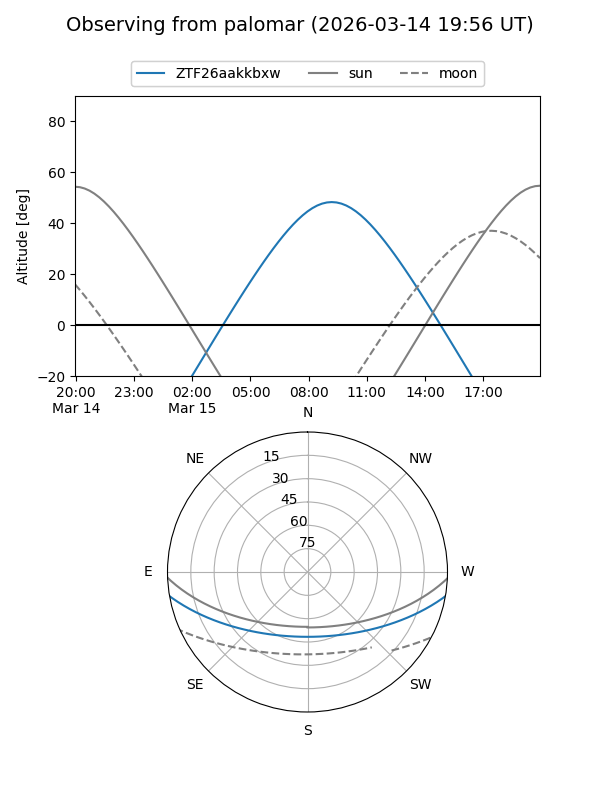
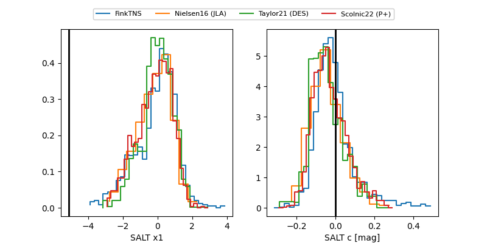

ZTF26aakkbxw
Target ZTF26aakkbxw at 2026-03-15 10:25
Aliases and brokers:
FINK: link
Lasair: link
ALeRCE: link
alt names
ZTF26aakkbxw (ztf,fink_ztf)
Coordinates:
equatorial (ra, dec) = 193.7329,-8.17091
equatorial (HMS+DMS) = 12:54:55.89,-08:10:15.27
galactic (l, b) = (304.4278,+54.69069)
Flags:
Photometry:
last ztfg=19.91, ztfr=20.01
1 ztfg, 2 ztfr detections
Lightcurve

Visibility


Additional plots
